| The Ladies Gaelic Football Association | Gaelic4Girls | 2018 TG4 Ladies Football All-Star team: |

Ladies Gaelic football is a team GAA sport for women, very similar to Gaelic football, and co-ordinated by the Ladies' Gaelic Football Association. It is played between two teams of 15 players.
The game consists of 2 thirty-minute halves. A team achieves a score by making the ball go between the goal posts. If the ball is kicked over the bar for the team earns one point,If the ball goes under the bar for a "goal", the team earns 3 points.
A number of counties in Ireland lay claim to being the cradle of Ladies Gaelic Football. Founded in 1974, Ladies Gaelic Football is still recognised as one of the fastest growing female sports in Europe. The sport originated in Ireland and is most popular there, although it is played in other countries such as the United Kingdom, Mainland Europe, the United States, Australia and Asia.
With over 1000 clubs in Ireland and membership growing by the day, Ladies Gaelic is reaching women and girls from all over the country. Not stopping there however, the Ladies Gaelic Football Association has many overseas clubs, one of the latest additions coming from Cape Town in South Africa.
The Ladies Gaelic Football Association is the organisation which promotes and regulates ladies' gaelic football in Ireland. It provides a social outlet and a healthy activity for thousands of people around the world. Starting with club football for primary schools girls, an individual can keep playing Ladies Gaelic for as long as she wants, especially now with their Gaelic4Mothers&Others initiative for those adults interested in recreational or non-competitive participation. Coming a long way since 1974 the Ladies Gaelic Football Association now has 17 full time employees, ten of whom are based in Croke Park, and the remaining 7 based in various regional locations throught the country. The Ladies Gaelic Football Association strives to be a modern, innovative and well run organisation that provides a quality service and support system for all members.
Many competitions and events are run throughout a season but undoubtedly the highlight of the Ladies Gaelic calendar is the All Ireland Finals day in Croke Park. The last Sunday in September sees Croke Park play host to all three of the Ladies Gaelic Championship Finals (Junior, Intermediate and Senior). With the Hill decorated and mini games of kids and mothers alike at all the half times, the Ladies Football Finals day is one of a kind. Attendance at this colourful event is steadily growing and can now boast as being one of the highest attended female only sports events in the world.

G4G is a 12 week programme incorporating coaching sessions with fun non-competitive blitzes aimed at increasing participation in Ladies Gaelic Football. The programme targets girls aged between 8-12 years who are not currently registered with a Ladies Gaelic Football club. In essence, this is a tool to attract new players.
The aim of this programme is to;
| Name | County | Photograph |
|---|---|---|
| Ciara Trant | Dublin | 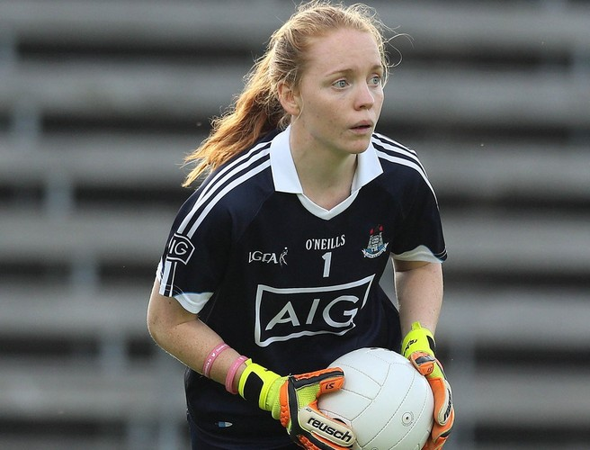 |
| Treasa Doherty | Donegal | 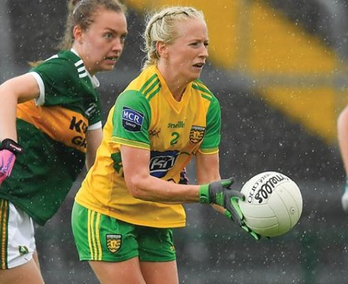 |
| Róisín Phelan | Cork | 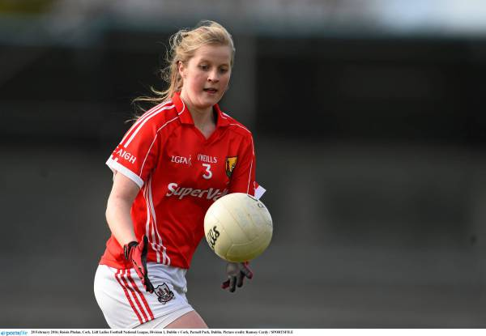 |
| Sinéad Burke | Galway | 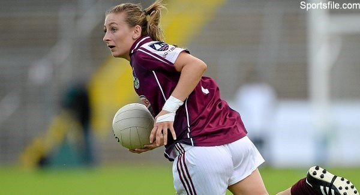 |
| Sinéad Goldrick | Dublin | 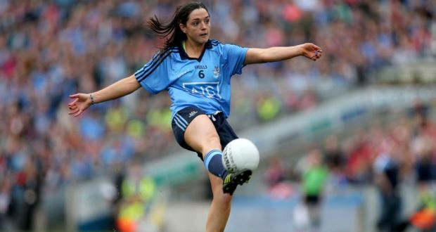 |
| Siobhán McGrath | Dublin | 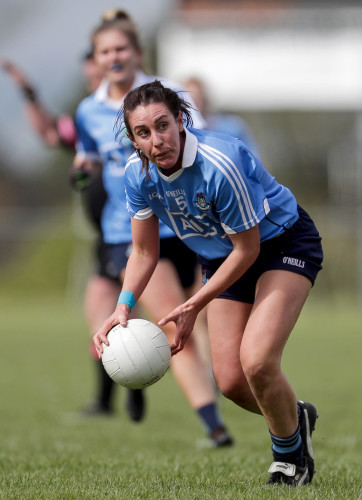 |
| Emma Spillane | Cork | 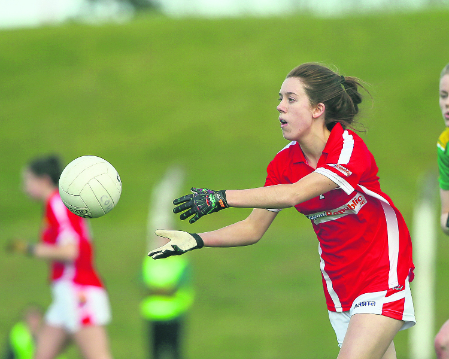 |
| Neamh Woods | Tyrone | 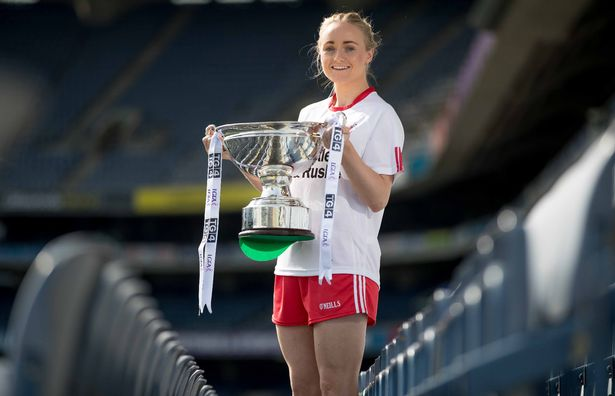 |
| Lauren Magee | Dublin | 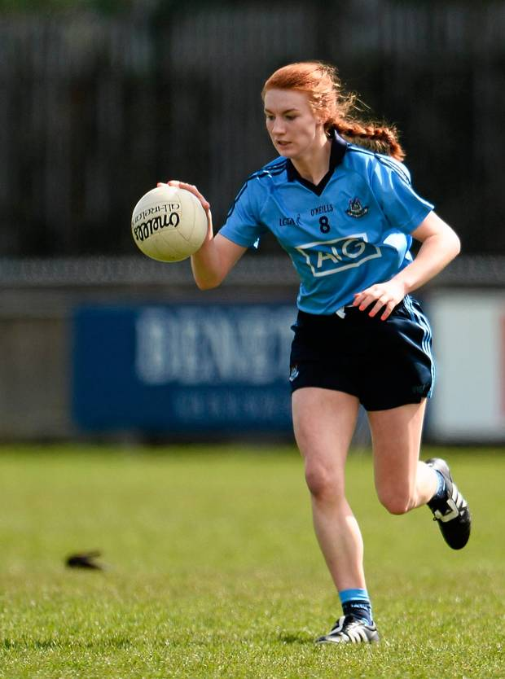 |
| Ciara O'Sullivan | Cork |  |
| Noelle Healy | Dublin | 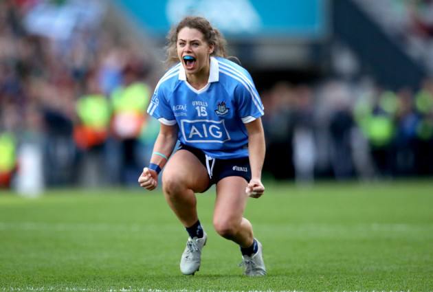 |
| Lyndsey Davey | Dublin | 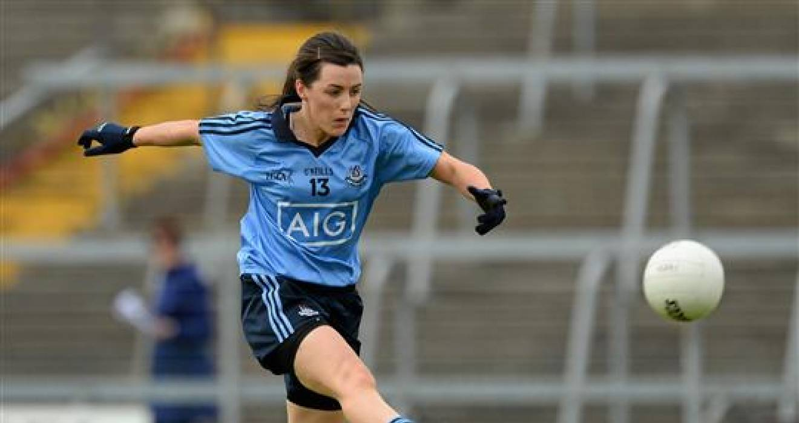 |
| Sinéad Aherne | Dublin | 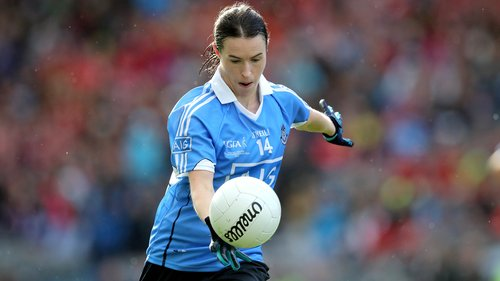 |
| Doireann O'Sullivan | Cork |  |
| Sarah Houlihan | Kerry | 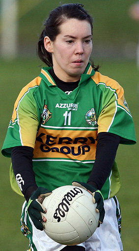 |